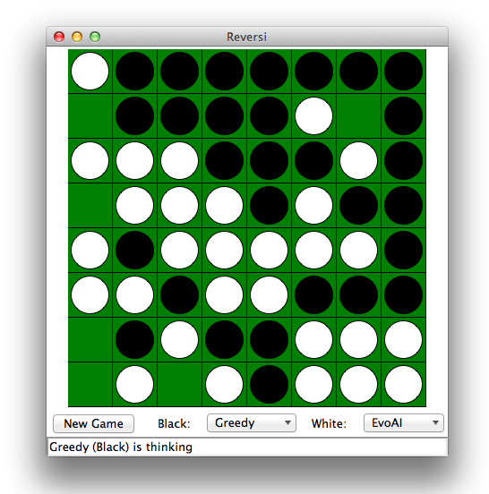
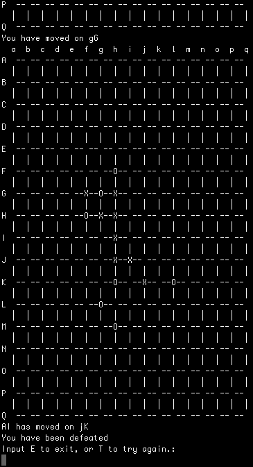
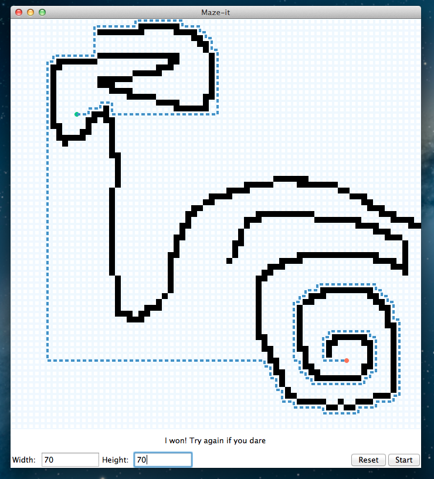
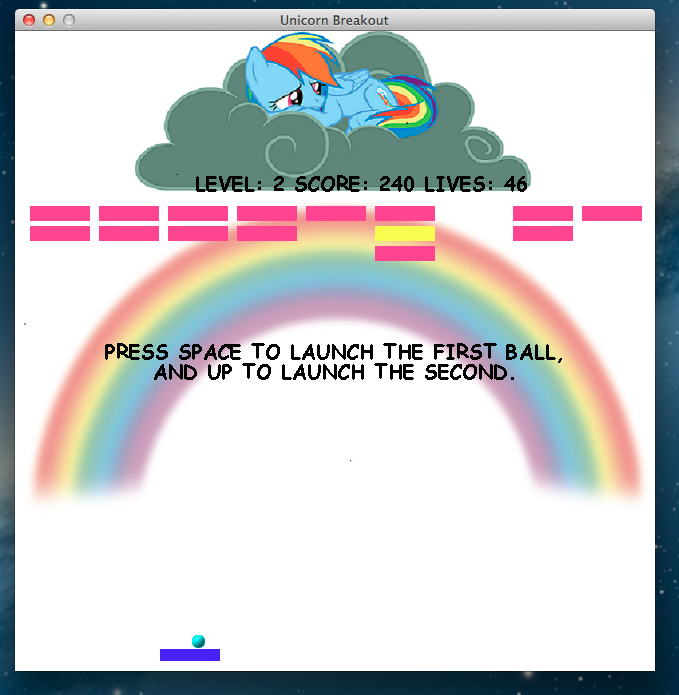
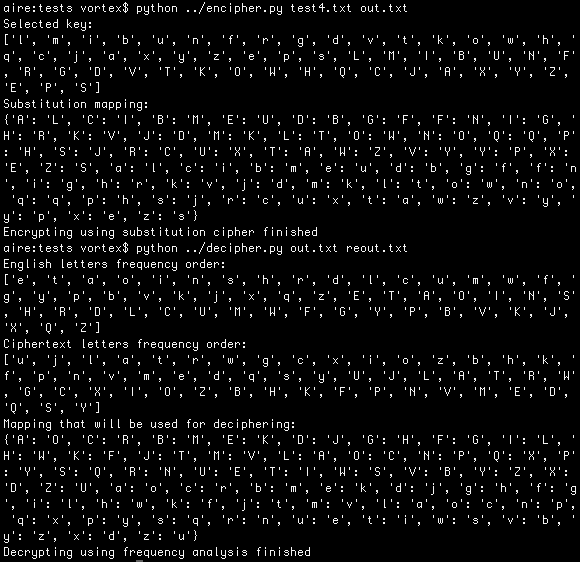
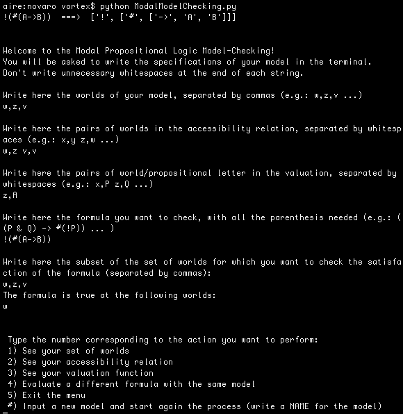
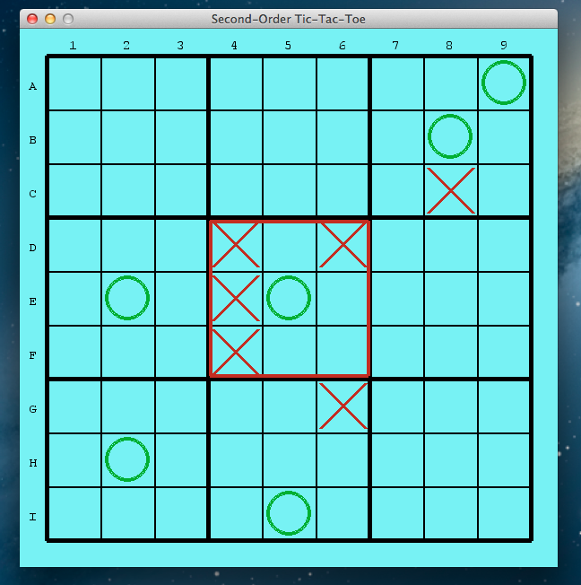

Imperative Programming with Python (winter 2015)
- Instructor: Facundo Carreiro (fcarreiro # dc # uba # ar)
- Teaching Assistant: (Aaron) Li Feng Han (l.han # uva # nl)
News
- Project ended: check the final project starring below!
- We start on the 5th of January 2015.
Timetable
Lecture resources
Assignments
Other resources
Final project show
Before the course the students had no programming experience at all, however
by the end of the course they developed some awesome final projects. They are quite cool people, aren't they?
- An Evolutionary AI for a Reversi application
(Christoper Badura, Merlijn Koek, Stefan Hell, Richard Iniengo.)

- A Gomoku game with two different difficulty levels.
(Andrzej Bułeczka, Zhai Fangzhou, Mathijs Mul, Daan van Stigt.)

- An implementation of the A* algorithm with visual demonstration.
(Anna Oosting, Nina Dongen, Thom van Gessel.)

- A Breakout game featuring power-ups and unicorns.
(Iliana Gioulatou, Sarah Hiller, Leanne Streekstra, Eileen Wagner.)

- A substitution-cypher cracker using frequency analysis.
(Konstantinos Gkikas.)

- A model-checker for modal logic.
(Marco Bacchin, Albert Janzen, Arianna Novaro, Andres Occhipinti Liberman.)

- A second-order tic-tac-toe.
(Benjamin Sparkes, Marcus Desai, Tom Hendriks, Tom Cattermole.)

Box of love and hate
I would really like to hear from you. Please tell me how you feel about the course, both during it and after it. Don't worry, it's anonymous! Try to be constructive and post as many times as you want.